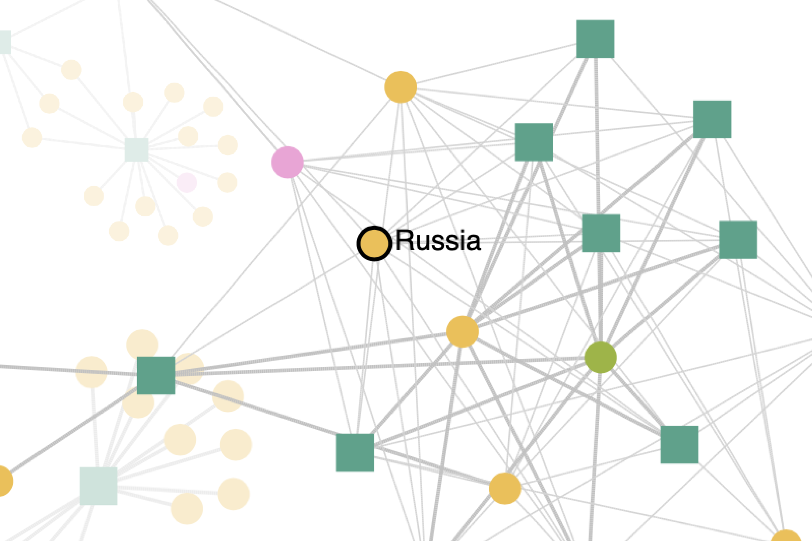 | Peace Agreement Signatory Dashboard vis_peace_agreement_signatory_dashboard
| Experimental | - PAA-X — Actor dataset underlying the signatory network. field_ids from NetPanorama template field bindings (network/timeline/jigsaw/list.json all bind the same field set); other bound fields (Type, date, id, short_agt_name, target_type, year) are renamed/derived during data prep and not traceable 1:1 to a single raw column, so left unmapped rather than guessed.
- PA-X — Agreement metadata (AgtId, agt_name, agt_type, Part, ThrdPart, PAX_Hyperlink) merged with PAA-X actor data to build the per-country *_agt.json files (confirmed via src/data_prep_for_dashboard and the repo README). field_ids from NetPanorama template field bindings (network/timeline/jigsaw/list.json all bind the same field set); other bound fields (Type, date, id, short_agt_name, target_type, year) are renamed/derived during data prep and not traceable 1:1 to a single raw column, so left unmapped rather than guessed.
| - Actor (covered)
- Relational data (covered)
| - Jinrui Wang
- Niamh Henry
- Benjamin Bach
- Sanja Badanjak
- Christine Bell
| Vue.js, D3.js, NetPanorama | | Dashboard | - Network (view, types: network) — Node-link network diagram of actors and their signatory relationships to agreements (NetPanorama network.json template, src/components/network.vue).
- Timeline (view, types: timeline) — Timeline layout of agreements/actors over time (NetPanorama timeline.json template, src/components/timeline.vue).
- Adjacency Matrix (view, types: matrix) — Actor-by-agreement adjacency matrix (src/components/adjacencymatrics.vue; custom D3, not a NetPanorama template).
- Jigsaw (view, types: custom) — Jigsaw-piece layout grouping actors/agreements (NetPanorama jigsaw.json template, src/components/jigsaw.vue).
- List (view, types: table) — Sortable list view of actors/agreements (NetPanorama list.json template, src/components/list.vue).
- Actor Type Legend (component, types: —) — Shared colour legend for actor types, reused across all views (src/components/legends.vue, data/actor_definitions.json).
| Node-link network diagram of peace agreement signatories, with actor nodes such as Russia connected by weighted edges. | — | 2026-07-24 | 2026-07-24 | — |
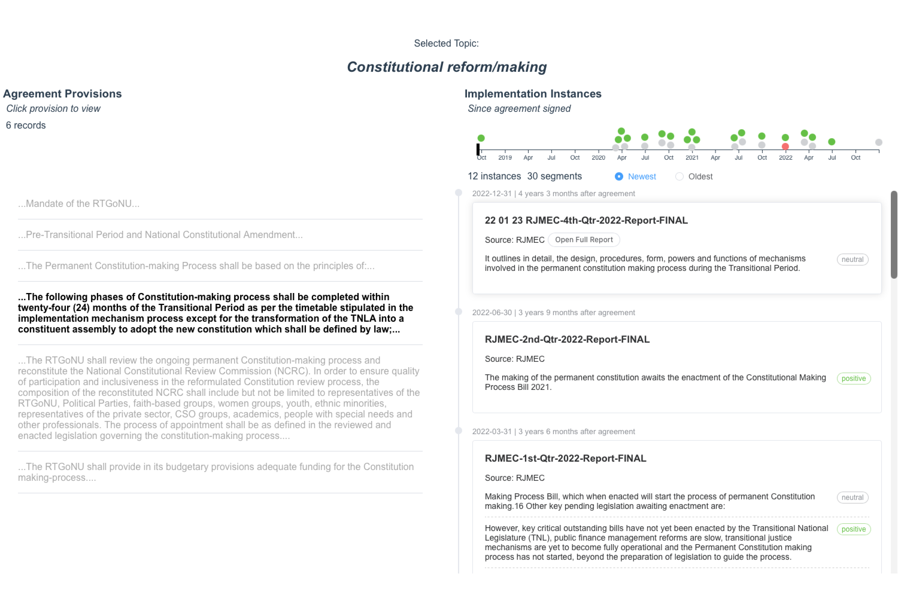 | Implementation Narratives + Interface vis_implementation_narratives_interface
| Experimental | - PA-X — Uses PAX manual codes and auto-tagging of topics to identify implementation-relevant provisions. Repo consumes precomputed/derived JSON (topic-tagged provisions with scores, report thresholds — src/data/topicTimelineData.json, agt_description_links.json), not raw dataset columns directly, so field_ids left empty rather than force-mapped.
- Implementation Reports — Implementation report instances (e.g. RJMEC quarterly reports) linked to agreement provisions by topic. Repo consumes precomputed/derived JSON (topic-tagged provisions with scores, report thresholds — src/data/topicTimelineData.json, agt_description_links.json), not raw dataset columns directly, so field_ids left empty rather than force-mapped.
| - Activity (covered)
- Time (covered)
| - Roy Gardner
- Jinrui Wang
- Niamh Henry
| Vue.js, D3.js, Render | | Dashboard | - Agreement Provisions (view, types: table) — List of agreement provisions for a selected topic; click a provision to view related implementation records.
- Implementation Instances (view, types: timeline) — Timeline and list of implementation report instances since the agreement was signed.
| Two-panel interface showing agreement provisions for a selected topic (e.g. Constitutional reform/making) alongside a timeline and list of implementation report instances such as RJMEC quarterly reports. | — | 2026-07-24 | 2026-07-24 | — |
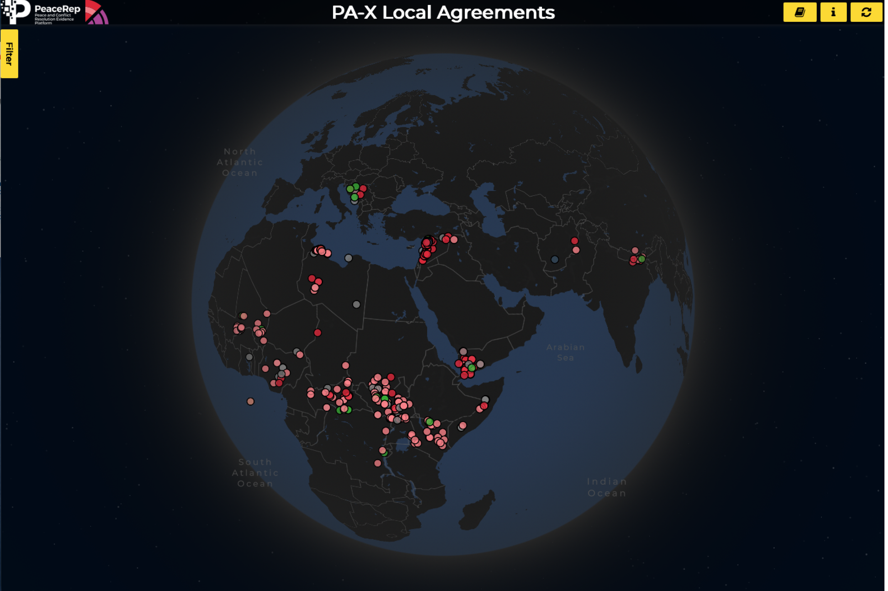 | PA-X Local Agreements Map vis_pax_local_agreements_map
| Experimental | - PA-X Local
v7 — Local agreements mapped globally. field_ids confirmed via js/index.js: Stage drives the filter/map layer, Dat drives date sorting.
| - Space (covered)
- Actor (covered)
| - Tomas Vancisin
- Niamh Henry
| Mapbox GL JS, Turf.js, D3.js | | Map | - Map (view, types: map) — MapLibre GL choropleth/point map of local agreements, coloured by stage; click-through to agreement detail (js/index.js).
- Stage Filter (component, types: —) — Filter panel to show/hide agreements by process stage (Pre-negotiation, Ceasefire, etc.).
| Dark-themed interactive 3D globe titled 'PA-X Local Agreements', showing coloured markers clustered across Africa, the Middle East, and parts of Europe and Asia, with a filter panel. | — | 2026-07-24 | 2026-07-24 | — |
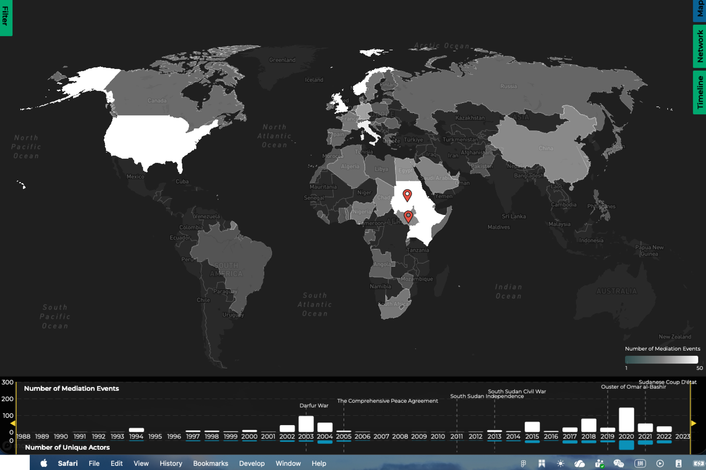 | Sudan Mediation Analysis vis_sudan_mediation_analysis
| Experimental | - GLO-PAD — GLO-PAD pilot data focused on Sudan and South Sudan mediation. field_ids are the columns the map/network/timeline views most directly render (locale, third party + type, year, negotiation type, agreement name); the ~15 boolean mediation-activity-type columns (mediation, hosting_talks, negotiating_and_drafting, etc.) also feed the visuals but aren't individually listed.
| - Space (covered)
- Time (covered)
- Relational data (covered)
| - Tomas Vancisin
- Mateja Peter
- Niamh Henry
| Vite, D3.js, Mapbox GL JS, Leaflet, Turf.js, Render | | Dashboard | - Map (view, types: map) — Choropleth map of mediation events by country.
- Network (view, types: network) — Network view tab visible in the screenshot.
- Timeline (view, types: timeline, bar_chart) — Bar chart of mediation events by year with event annotations.
| Dashboard with Map, Network, and Timeline view tabs: a world map shaded by number of mediation events (highlighting Sudan, South Sudan, and the USA) above a bar chart of mediation events by year, annotated with events such as the Darfur War and South Sudan independence. | — | 2026-07-24 | 2026-07-24 | — |
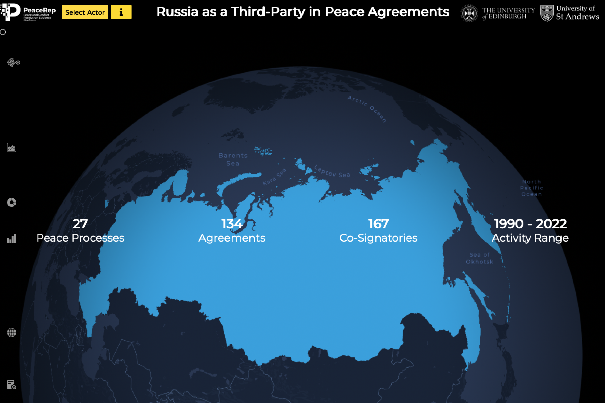 | Third Party in Peace Agreements Storytelling vis_third_party_storytelling
| Experimental | - PAA-X
v7 (Practical Third Parties subset) — Practical Third Party Signatories subset of PAA-X, used to build per-actor summary statistics. field_ids from confirmed direct-name matches in all_update.csv/agts_rus_china.csv/paax_practical_third_labelled_signatories.csv; other bound columns (agt_type, date, year) are renamed/derived during data prep, not traceable 1:1, so left unmapped. - PA-X — Agreement metadata (AgtId, agt_type, PP/PPName, PAX_Hyperlink, agt_description) merged with PAA-X signatory data in all_update.csv / agts_rus_china.csv / paax_practical_third_labelled_signatories.csv (confirmed via repo data files). field_ids from confirmed direct-name matches in all_update.csv/agts_rus_china.csv/paax_practical_third_labelled_signatories.csv; other bound columns (agt_type, date, year) are renamed/derived during data prep, not traceable 1:1, so left unmapped.
| - Time (covered)
- Space (covered)
- Actor (covered)
| - Tomas Vancisin
- Mateja Peter
- Niamh Henry
- Sanja Badanjak
| Leaflet, Mapbox GL JS | | Scrollytelling | - Map (view, types: map) — Mapbox GL map of third-party actor geography, persists across the intro and later scroll steps (js/main.js, #map).
- Beeswarm (view, types: beeswarm) — Horizontal beeswarm/dot-strip plot (js/main.js, #visualization, class 'horizontal_bee').
- Pie Chart (view, types: pie_chart) — Pie chart scroll step (js/main.js, #visualization05, piechart_svg).
- Bar Chart (view, types: bar_chart) — Bar chart of practical third-party signatory counts (js/main.js, #visualization06, barchart_svg).
- Unemployment Area/Line Chart (view, types: area_chart, line_chart) — Combined area + multi-line chart of unemployment over time (js/scrollerVis.js multiline_svg, js/main.js #visualization075). Data comes from data/unemployment.csv, a file not yet linked to any registered dataset — flagging for a future dataset-coverage pass rather than fixing now.
| Scrollytelling page titled 'Russia as a Third-Party in Peace Agreements', showing a globe centred on Russia and summary statistics: 27 peace processes, 134 agreements, 167 co-signatories, activity range 1990-2022. | — | 2026-07-24 | 2026-07-24 | — |
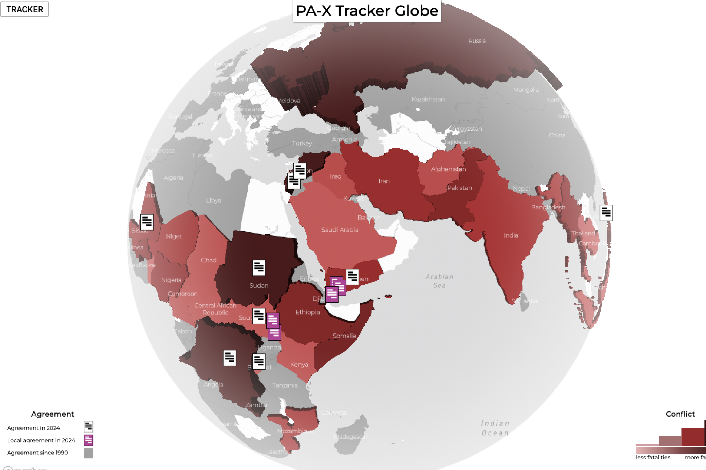 | Live process global map vis_live_process_global_map
| Experimental | - PA-X — Tracker-derived process and conflict-level data displayed on a globe. public/data/agt_point_data.csv and country_data.csv are derived/aggregated files (central points per country, total_agreements/unique_processes counts), not raw PA-X columns, so field_ids left empty.
- UCDP — public/data/country_data.csv aggregates rolling UCDP fatality/event counts per country (ucdp_fatalities_last_12 etc.) — a computed rollup, not raw UCDP columns, so field_ids left empty.
- ACLED — public/data/country_data.csv aggregates rolling ACLED fatality/event counts per country (acled_fatalities_last_12 etc.) — a computed rollup, not raw ACLED columns, so field_ids left empty.
| - Space (covered)
- Activity (covered)
| - Tomas Vancisin
- Niamh Henry
| Render, Svelte, Vite, D3.js, Mapbox GL JS, Turf.js | | Globe | - Globe (view, types: globe) — Mapbox GL v3 globe (no mercator override found; v3+ defaults to globe projection) showing country polygons and agreement points (src/lib/Map.svelte).
- Country Dropdown (component, types: —) — Country search/select dropdown (src/lib/Dropdown.svelte).
- Info Panel (component, types: —) — About/info panel shown on demand (src/lib/Info.svelte, public/data/info_section.json).
| Interactive 3D globe titled 'PA-X Tracker Globe', with countries shaded by conflict fatality level and icon markers for agreements in 2024, local agreements in 2024, and agreements since 1990. | — | 2026-07-24 | 2026-07-24 | — |
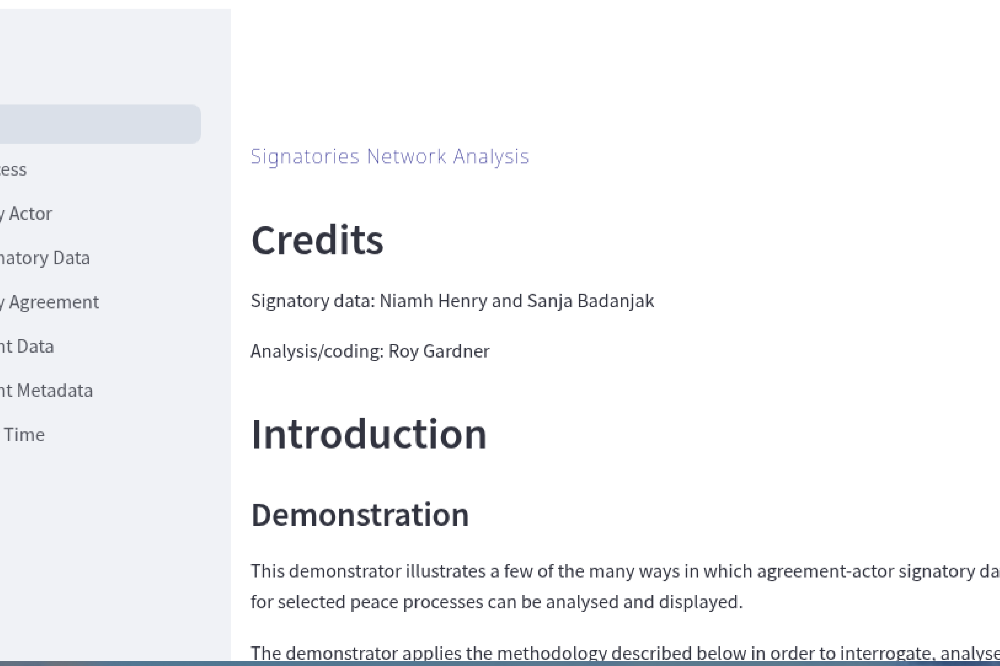 | Peace Agreement Signatories Network Analysis vis_signatories_network_analysis
| Deprecated | - PAA-X
v7 — No source_code link and the embed is a JS-rendered Streamlit app (not inspectable via fetch), so field_ids left empty rather than guessed from the deployed app alone.
| - Actor (covered)
- Relational data (covered)
| - Roy Gardner
- Niamh Henry
- Sanja Badanjak
| Streamlit | | Dashboard, Network | - Network (view, types: network) — Signatory network graph (Streamlit app, no source_code link; description confirms 'network analysis methodology').
| Screenshot of the app's Credits section, listing 'Signatory data: Niamh Henry and Sanja Badanjak' and 'Analysis/coding: Roy Gardner', with navigation tabs for Actor, Signatory Data, Agreement, and Time views. | — | 2026-07-24 | 2026-07-24 | — |
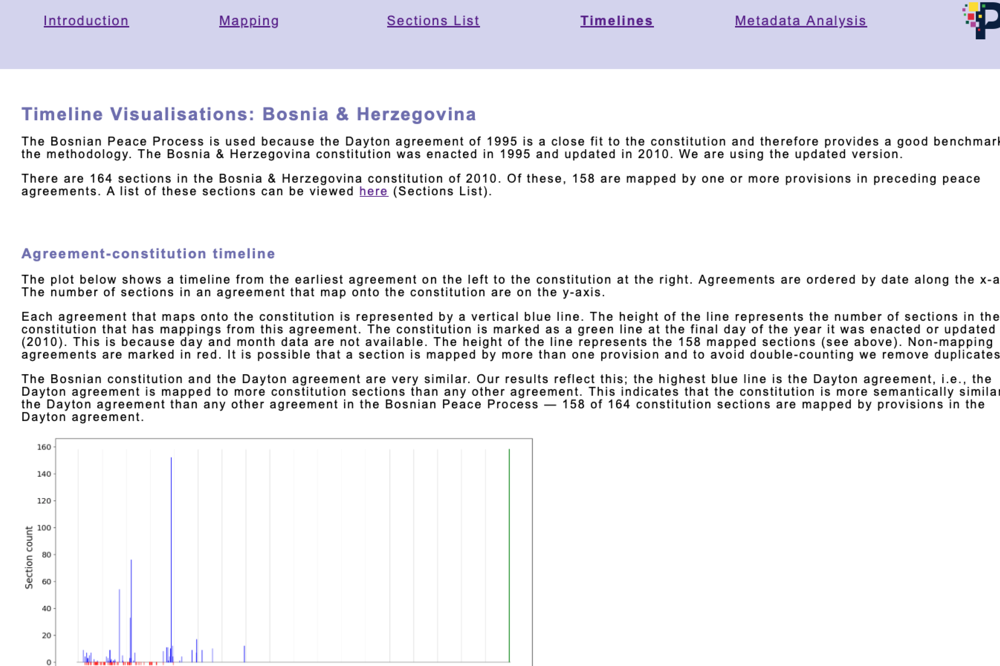 | Semantic Mapping: Peace Agreements — Constitutions vis_semantic_mapping_constitutions
| Excluded | - PA-X — Peace agreement provisions semantically mapped onto later constitution sections.
| - Activity (covered)
- Relational data (covered)
- Time (covered)
| | — | | Timeline, Bar chart | — | Chart titled 'Agreement-constitution timeline' for Bosnia & Herzegovina, showing vertical bars for each peace agreement sized by the number of constitution sections it maps onto, alongside navigation tabs for Introduction, Mapping, Sections List, Timelines, and Metadata Analysis. | — | 2026-07-24 | 2026-07-24 | — |
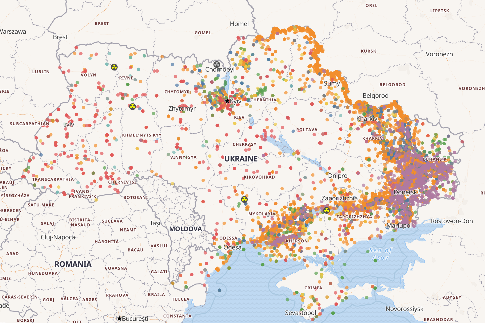 | Ukraine Map vis_ukraine_map
| Experimental | - ACLED — field_ids are the columns rendered as map layer geometry/paint properties, per script.js addLayer calls; not exhaustive of every column in the source file.
- UCDP — field_ids are the columns rendered as map layer geometry/paint properties, per script.js addLayer calls; not exhaustive of every column in the source file.
- EPR — field_ids are the columns rendered as map layer geometry/paint properties, per script.js addLayer calls; not exhaustive of every column in the source file.
- Power Plants — field_ids are the columns rendered as map layer geometry/paint properties, per script.js addLayer calls; not exhaustive of every column in the source file.
- Humanitarian Corridors — field_ids are the columns rendered as map layer geometry/paint properties, per script.js addLayer calls; not exhaustive of every column in the source file.
| - Space (covered)
- Activity (covered)
| - Sarah Schöttler
- Benjamin Bach
- Niamh Henry
| MapLibre GL JS, D3.js | | Map | - Map (view, types: map) — MapLibre GL map with 5 independently toggleable data layers (script.js addSource/addLayer for acled, ucdp, epr, powerplants, hc).
- Layer Toggle Panel (component, types: —) — Checkbox controls to show/hide each of the 5 data layers independently (script.js .layerToggle).
| Geographic point map of Ukraine with thousands of colour-coded dots representing different conflict and infrastructure data layers, including a dense cluster of overlapping points in the eastern Donetsk/Luhansk region and nuclear power plant icons at several sites. | — | 2026-07-24 | 2026-07-24 | — |
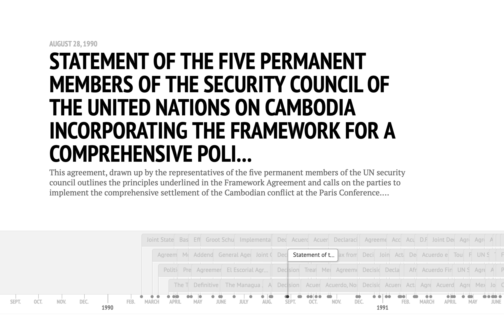 | Timelines of Institutional Change vis_timelines_institutional_change
| Experimental | - PA-X
v8 — No source_code link and no fetchable data-source URL found for TimelineJS's feed on this page, so field_ids left empty. - Colpus — Coup events from the Colpus dataset shown alongside peace agreements, local agreements, and other institutional-change events. No source_code link and no fetchable data-source URL found for TimelineJS's feed on this page, so field_ids left empty.
- Constitute — No source_code link and no fetchable data-source URL found for TimelineJS's feed on this page, so field_ids left empty.
- NELDA — No source_code link and no fetchable data-source URL found for TimelineJS's feed on this page, so field_ids left empty.
- Amnesties ⚠ — Confirmed via the live tracker page (117 mentions of amnesty/amnesties) matching the record's own description ('...amnesties, elections, coups...'). No source_code link and no fetchable data-source URL found for TimelineJS's feed on this page, so field_ids left empty.
| - Time (covered)
- Activity (covered)
| - Niamh Henry
- Sanja Badanjak
- Christine Bell
| TimelineJS | | Timeline | - Timeline (view, types: timeline) — TimelineJS (Knight Lab) merged timeline of peace agreements, local agreements, constitutional events, amnesties, elections, and coups for the selected country.
| Multi-row horizontal timeline of peace agreements and related events from 1990 onward, grouped by category, with a detail panel showing the full title, date, and summary of a selected agreement (e.g. the 1990 Statement of the Five Permanent Members of the UN Security Council on Cambodia). | — | 2026-07-24 | 2026-07-24 | — |
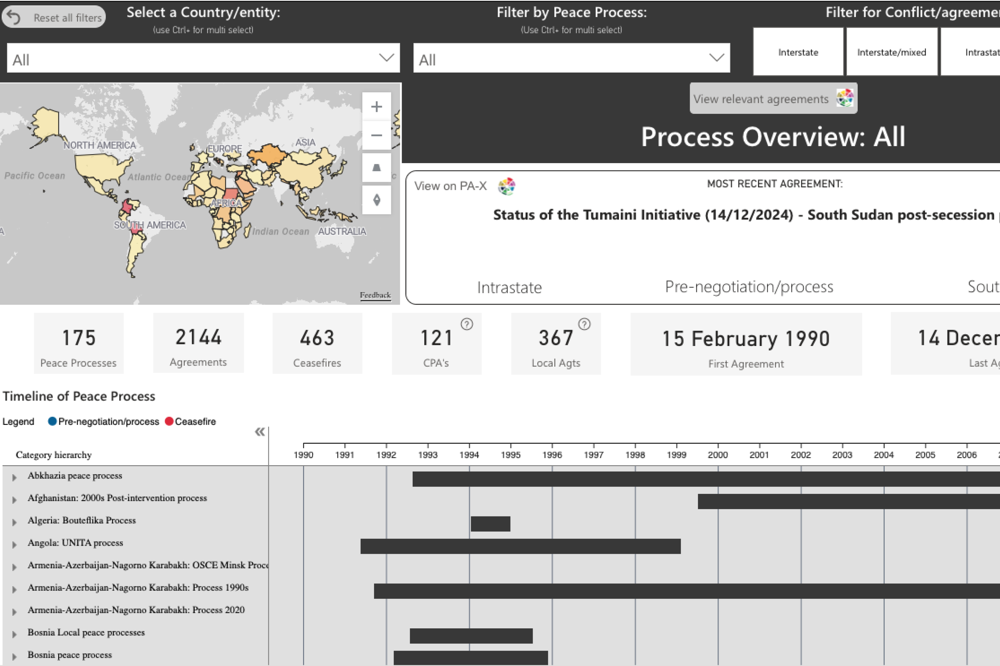 | Process Overview Dashboard vis_process_overview_dashboard
| Experimental | | - Space (covered)
- Time (covered)
- Activity (covered)
| - Niamh Henry
- Sanja Badanjak
- Christine Bell
| Microsoft Power BI | | Dashboard | - Map (view, types: map) — Map panel within the Power BI process-overview report (embed confirms Power BI; specific panel layout not independently inspectable without report access).
- Timeline (view, types: timeline) — Timeline panel within the Power BI process-overview report.
| Dashboard titled 'Process Overview: All' with country/process/conflict-type filters, a world choropleth map, summary stat tiles (175 peace processes, 2144 agreements, 463 ceasefires, and more), and a Gantt-style timeline of peace processes by category from 1990 onward. | — | 2026-07-24 | 2026-07-24 | — |
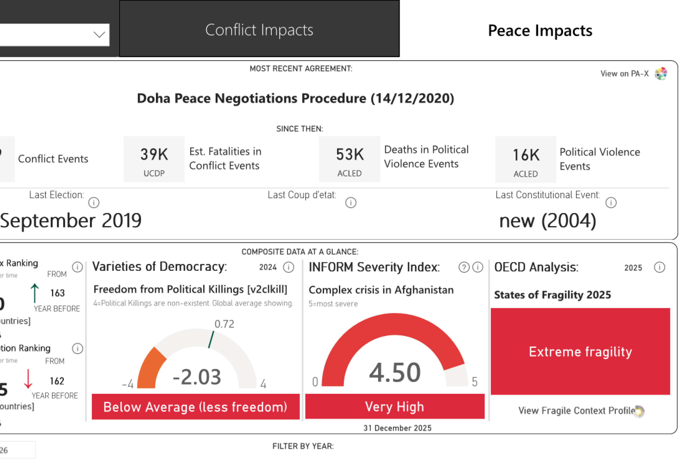 | Peace Impacts Dashboard(s) vis_peace_impacts_dashboards
| Experimental | - PA-X
v8 — Power BI report content isn't fetchable; view/field detail limited to what the public_link page's title confirms ('Compare Impacts').
| - Activity (covered)
- Time (covered)
| - Niamh Henry
- Sanja Badanjak
- Christine Bell
| Microsoft Power BI | | Dashboard | - Compare Impacts (view, types: table) — Power BI report titled 'PA-X Tracker: Compare Impacts' (confirmed via the public_link page's own <title>); specific chart types inside the report aren't independently inspectable without report access.
| Dashboard with Conflict Impacts and Peace Impacts tabs, showing stat tiles for conflict events and fatalities (UCDP, ACLED) since the most recent agreement, alongside gauge indicators for Varieties of Democracy, INFORM Severity Index, and OECD fragility ranking. | — | 2026-07-24 | 2026-07-24 | — |
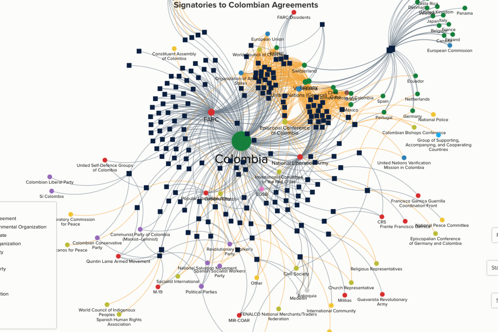 | Agreement - Actor Networks vis_agreement_actor_networks
| Experimental | | - Actor (covered)
- Relational data (covered)
| | Kumu | | Network | - Network (view, types: network) — Kumu relationship map of agreement-actor connections (Kumu is network-only, per skill's known single-purpose tools).
| Force-directed network diagram titled 'Signatories to Colombian Agreements', with Colombia as the largest central node connected to countries, international organisations, and armed groups such as FARC and the National Liberation Army. | — | 2026-07-24 | 2026-07-24 | — |
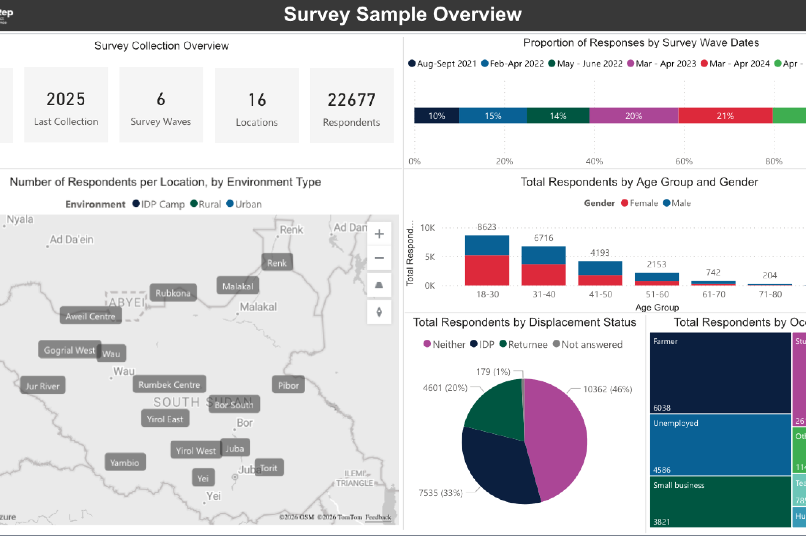 | South Sudan Perceptions of Peace Survey vis_south_sudan_perceptions_of_peace_survey
| Experimental | | - Space (covered)
- Time (covered)
- Actor (covered)
| | Microsoft Power BI | | Dashboard | - Map (view, types: map) — Map panel within the Power BI South Sudan perceptions-of-peace survey report.
| Dashboard titled 'Survey Sample Overview' showing stat tiles (22,677 respondents, 6 survey waves, 16 locations), a bar of response share by survey wave date, a map of South Sudan survey locations, age/gender bars, a displacement-status pie chart, and an occupation treemap. | — | 2026-07-24 | 2026-07-24 | — |
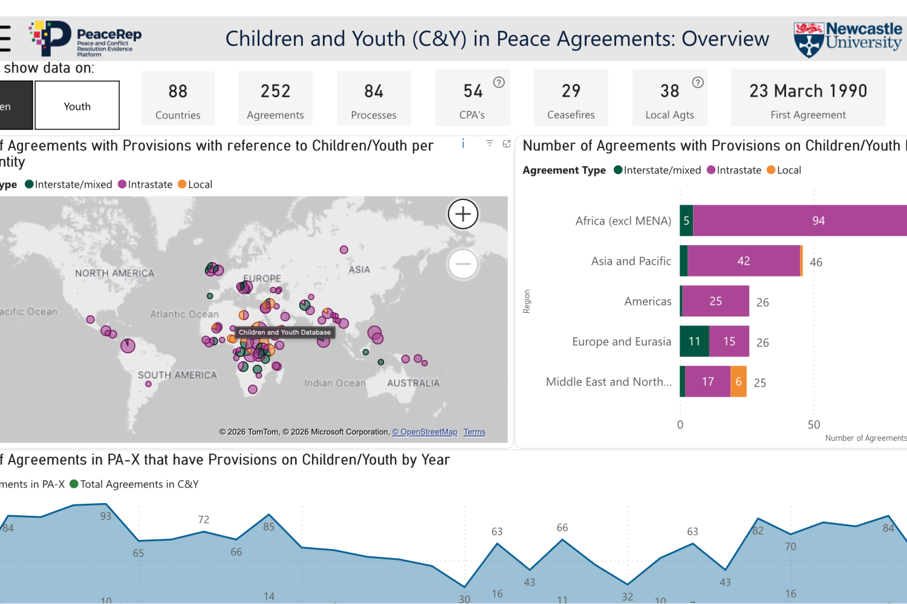 | Children and Youth in Peace Agreements vis_children_and_youth_peace_agreements
| Experimental | | - Space (covered)
- Time (covered)
- Activity (covered)
| | Microsoft Power BI | | Dashboard | - Map (view, types: map) — Map panel within the Power BI children-and-youth report.
- Timeline (view, types: timeline) — Timeline panel within the Power BI children-and-youth report.
| Dashboard titled 'Children and Youth (C&Y) in Peace Agreements: Overview' with stat tiles (88 countries, 252 agreements, 84 processes), a world bubble map of agreements referencing children/youth by region and agreement type, a regional bar chart, and a line chart of agreements over time since 1990, co-branded with the PeaceRep and Newcastle University logos. | — | 2026-07-24 | 2026-07-24 | — |
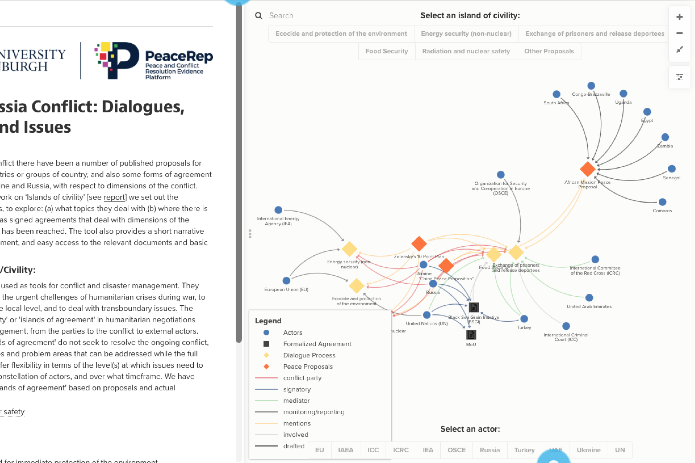 | Dialogue Mapping - Ukraine vis_dialogue_mapping_ukraine
| Experimental | — | - Activity (covered)
- Actor (covered)
- Relational data (covered)
| - Christine Bell
- Niamh Henry
| Kumu | | Network | - Network (view, types: network) — Kumu relationship map of agreements/proposals, topics, and signatories in Russia's war against Ukraine, based on Cindy Wittke's 'Islands of Civility' research report (per data.csv description). Kumu is network-only (skill's known fact).
| — | — | 2026-07-24 | 2026-07-24 | Underlying data is a bespoke qualitative compilation drawn from Cindy Wittke's 'Islands of Civility' research report (per data.csv's Data column: 'Research report'), not a registered structured dataset — no source_code link and the Kumu page's content isn't fetchable (JS-rendered SPA), so no dataset_id is linked here rather than guessing one. |
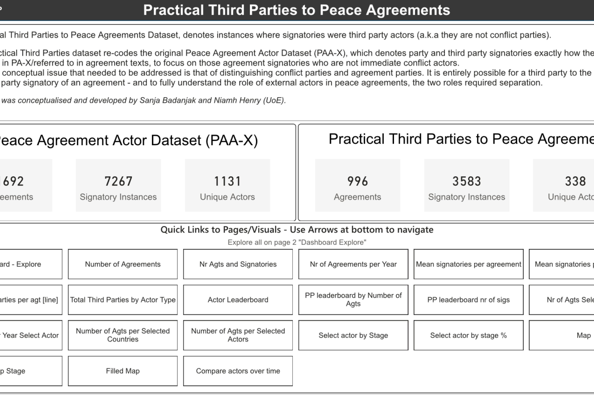 | Practical Third Parties Dashboard vis_practical_third_parties_dashboard
| Experimental | - PAA-X
v7 (Practical Third Parties subset)
| - Actor (covered)
- Activity (covered)
| | Microsoft Power BI | | Dashboard | - Practical Third Parties Table (view, types: table) — Power BI table/report view of the Practical Third Parties (PAA-X subset) data.
| — | — | 2026-07-24 | 2026-07-24 | — |
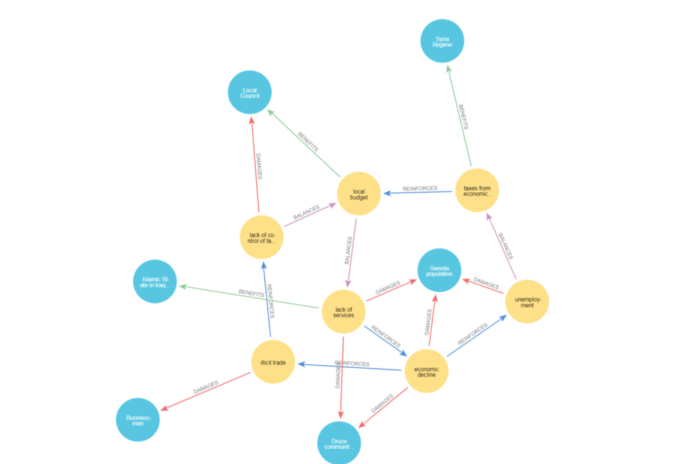 | Dialogue mapping experiments vis_dialogue_mapping_experiments
| Deprecated | — | — | - Niamh Henry
- Robert Wilson
- Sanja Badanjak
| — | — | — | — | — | — | 2026-07-24 | 2026-07-24 | No public_link, embed_link, or source_code exists for this record, and its data.csv description ('Need to finalise usable outputs... unsure where to go from here... unsure how useful') reads as an internal note about an unfinished/abandoned experiment rather than a description of a deployed visualisation. Leaving content.visualisation_types and views_components empty rather than guessing — there is nothing fetchable to investigate. |
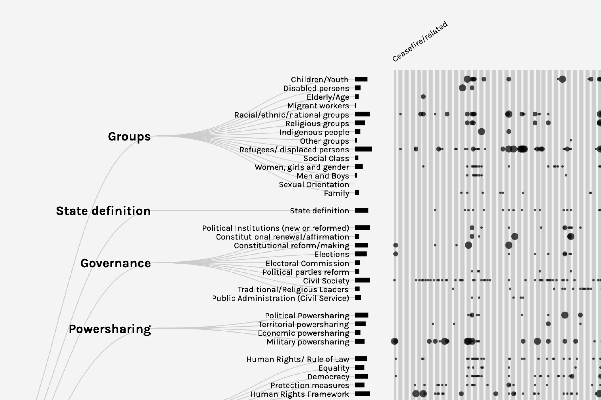 | Hierarchy & Continuity in Key Issues vis_hierarchy_continuity_key_issues
| Experimental | - PA-X — field_ids confirmed via tooltip/lookup code in index.html; the hierarchy.json topic-score structure itself (category, level, overall score) is derived/computed, not raw PA-X columns.
| - Time (covered)
- Activity (covered)
| - Tobias Kauer
- Benjamin Bach
| D3.js | | Dashboard | - Topic Hierarchy Tree (view, types: tree) — D3 tree layout of the topic hierarchy (index.html, d3.tree() over hierarchy.json).
- Agreement Bubbles (view, types: bubble_chart) — Agreements plotted as circles sized by topic score, grouped/sortable, with tooltips (PPName, agreement, category, level).
| — | — | 2026-07-24 | 2026-07-24 | — |
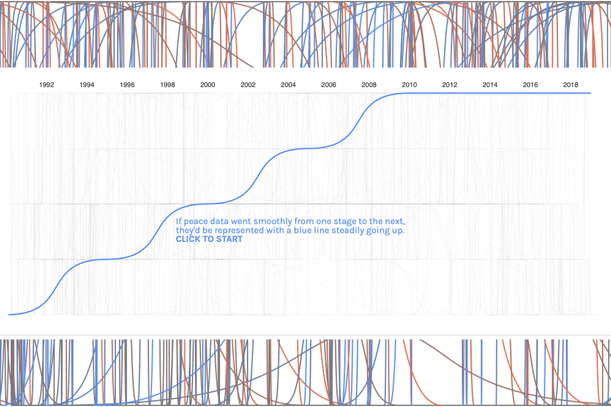 | Back and Forth in Peace Negotiations vis_back_and_forth_peace_negotiations
| Experimental | | - Time (covered)
- Activity (covered)
| - Tobias Kauer
- Benjamin Bach
- Tomas Vancisin
| D3.js | | Beeswarm | - Negotiation Beeswarm Timeline (view, types: beeswarm) — Circles positioned along a time (d3.scaleTime) x-axis by agreement date, jittered to avoid overlap ('messy timeline'), showing negotiation back-and-forth (index.html, data/pax_all_agreements_v10.csv).
- Agreement Search (component, types: —) — Typeahead/select2 search box to find and highlight a specific agreement.
| — | — | 2026-07-24 | 2026-07-24 | — |
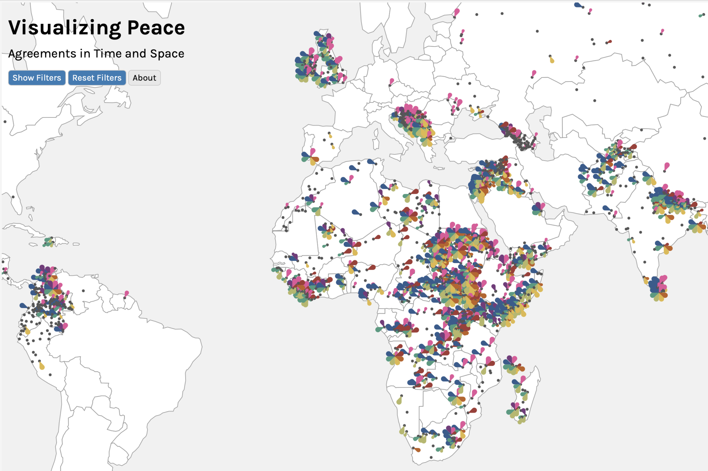 | Map Visualising Peace Agreements in Time and Space vis_map_peace_agreements_time_space
| Experimental | - PA-X — Rendered fields (year, count, code, score) are computed/aggregated in JS from the raw CSV (year derived from Dat), not literal source columns, so field_ids left empty rather than guessed.
| - Space (covered)
- Time (covered)
- Activity (covered)
| - Lucy Havens
- Sarah Schöttler
- Benjamin Bach
- Mengting Bao
| D3.js | | Dashboard | - Map (view, types: map) — Map with glyph markers per peace process, sized/coloured by topic score (js/setup.js, js/geofunctions.js, js/popup.js).
- Timeline (view, types: timeline, line_chart) — Stacked yearly agreement blocks with an overlaid agreement-count trend line (js/timeline.js).
| — | — | 2026-07-24 | 2026-07-24 | — |
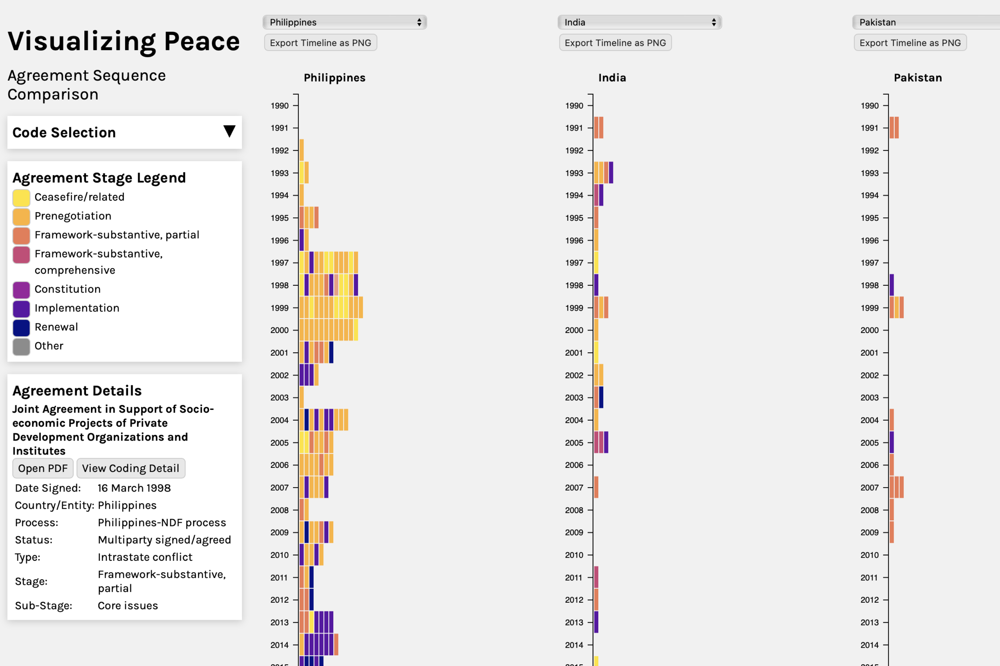 | Peace Agreement Sequence Comparison across Countries vis_peace_agreement_sequence_comparison
| Experimental | - PA-X — Rendered as a derived stage/code sequence structure (js/shared.js), not raw columns directly, so field_ids left empty.
| - Space (covered)
- Time (covered)
| - Lucy Havens
- Sarah Schöttler
- Benjamin Bach
| D3.js | | Dashboard | - Sequence Timeline (view, types: timeline) — Up to 3 side-by-side timeline panels (index.html #timeline-v0/v1/v2), each showing an agreement's coded topic/stage sequence for comparison.
- Code Selection (component, types: —) — Checkbox list to select which topic codes are shown across the timelines (js/compare.js codesCheckboxes).
- Code Legend (component, types: —) — Colour legend for topic codes/stages.
| — | — | 2026-07-24 | 2026-07-24 | — |
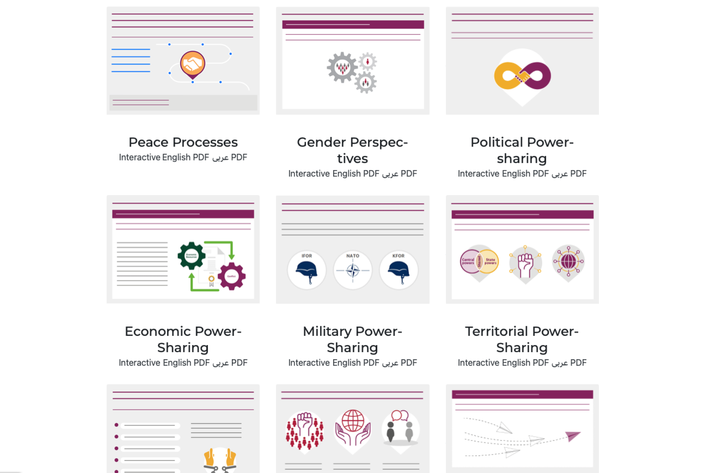 | PA-X Key Themes through Interactive Infographics vis_pax_key_themes_infographics
| Archived | | — | | H5P, Google Charts, University of Edinburgh Information Services | | Infographic | - Bar Chart (view, types: bar_chart) — Google Charts BarChart within the H5P-embedded infographic (confirmed via google.visualization.BarChart call).
- Pie Chart (view, types: pie_chart) — Google Charts PieChart within the H5P-embedded infographic (confirmed via google.visualization.PieChart call).
| — | — | 2026-07-24 | 2026-07-24 | — |
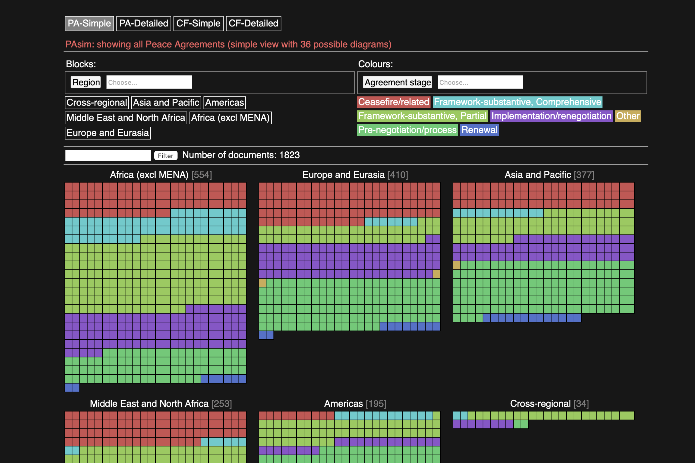 | Tile Grid Map of Peace Issues vis_tile_grid_map_peace_issues
| Experimental | | | | React, Surge | | Tile grid map | - Tile Grid (view, types: tile_grid_map) — Grid of country tiles coloured by peace-issue attributes (src/Area.jsx, Block.jsx, Group.jsx, Groups.jsx).
- Issue Filter (component, types: —) — Filter form/list to select which peace issues are shown (src/FilterForm.jsx, FilterList.jsx, FilterListColours.jsx).
| — | — | 2026-07-24 | 2026-07-24 | — |
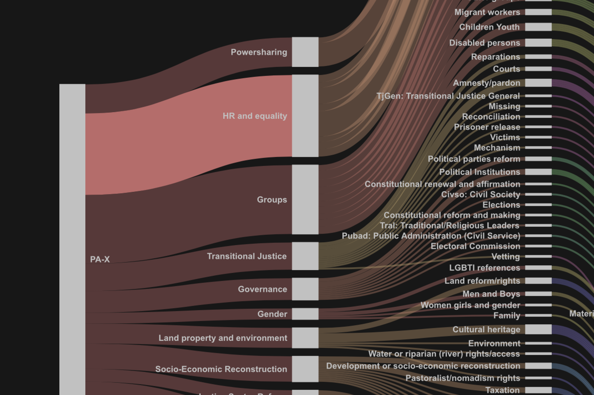 | Peace Agreement Content Alluvial vis_peace_agreement_content_alluvial
| Experimental | - PA-X — The repo's JS only swaps between pre-rendered static SVG frames — no CSV/JSON data loading found, so field_ids don't apply and are left empty.
| - Activity (covered)
- Relational data (covered)
| | RAWGraphs | | Alluvial diagram | - Alluvial Diagram (view, types: alluvial) — Hand-authored alluvial diagram (RAWGraphs-initiated per README) with click-through static SVG frames (svgs/00- through 12-, 99-) and pan/zoom (js/alluvial.js, js/panzoom.js). No live data binding — the JS only swaps pre-rendered SVG files, doesn't parse a CSV/JSON data source.
| — | — | 2026-07-24 | 2026-07-24 | — |
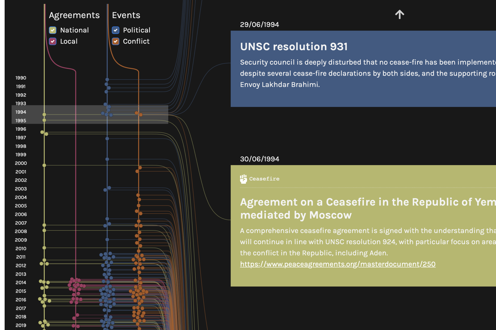 | Yemen Timeline vis_yemen_timeline
| Experimental | - PA-X — Data is loaded live from a published Google Sheet (a bespoke Yemen-specific curation described as drawing from PA-X, per the page's own text), not the raw PA-X CSV directly — field_ids left empty rather than guessed.
| - Space (covered)
- Time (covered)
- Activity (covered)
- Relational data (covered)
| - Tobias Kauer
- Benjamin Bach
- Robert Wilson
- Raiman Al-Hamdani
| D3.js | | Beeswarm | - Beeswarm Timeline (view, types: beeswarm) — D3 beeswarm timeline (variable literally named 'beeswarm' in the source) of Yemen agreements/events, toggleable by category (Agreements national/local, Events political/violent). Data loaded live from a published Google Sheet, not the repo's local CSV exports.
- Category Toggle (component, types: —) — Checkboxes to show/hide each category of event.
| — | — | 2026-07-24 | 2026-07-24 | — |
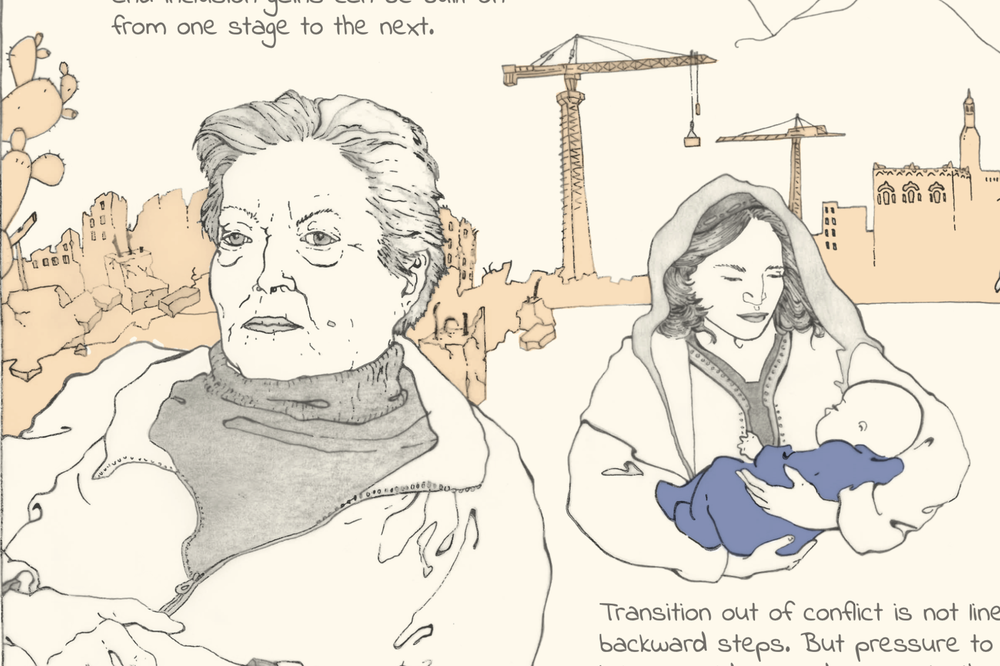 | Five Ways Peace Process can Support Inclusion More Effectively vis_five_ways_peace_process_inclusion
| Excluded | — | | | — | | — | — | — | — | 2026-07-24 | 2026-07-24 | — |
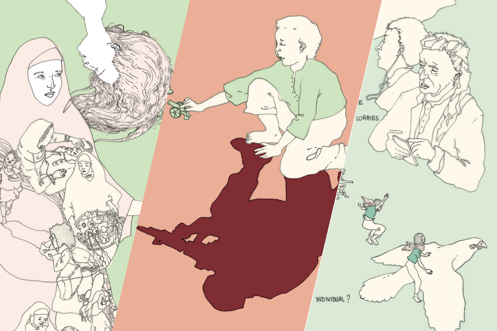 | Call for Peace Illustrations vis_call_for_peace_illustrations
| Excluded | — | - Actor (covered)
- Activity (covered)
| | — | | — | — | — | — | 2026-07-24 | 2026-07-24 | — |
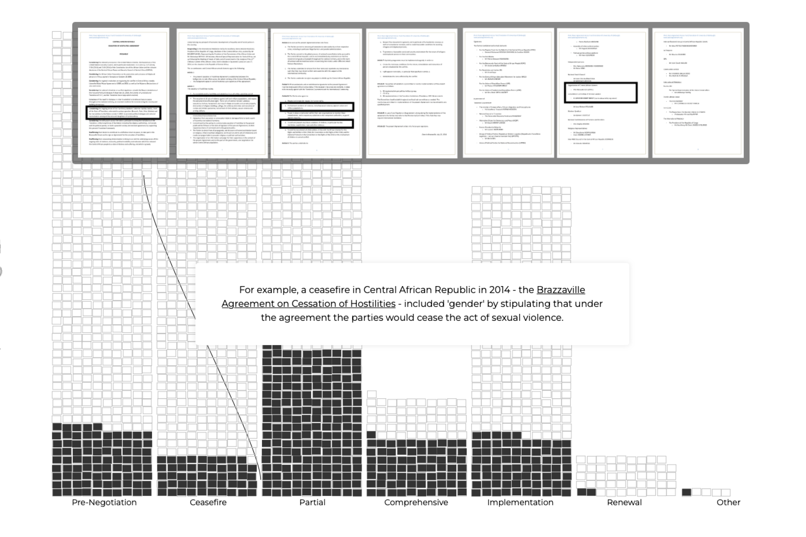 | PA-X Gender Key Insights Story vis_pax_gender_key_insights_story
| Experimental | - PA-X
- PA-X Gender — Confirmed via peacerep/pax_gender repo: public/data/pax_gender_v9.csv loaded alongside pax_v9.csv.
| — | | Render, Svelte, Rollup, D3.js, Mapbox GL JS, @onsvisual/svelte-charts, @onsvisual/svelte-maps | | Scrollytelling | - Map (view, types: map) — Geography step (src/vis/Map.svelte, Geography.svelte).
- Timeline (view, types: timeline) — Timeline step (src/vis/Timeline.svelte).
- Dendrogram (view, types: dendrogram) — Radial hierarchical clustering of agreements by topic (src/vis/Dendrogram.svelte, d3.hierarchy).
- Agreement Grid (view, types: waffle_chart) — Grid of one rectangle per agreement, canvas-rendered for performance (src/vis/Rectangles.svelte, Canvas*.svelte).
- Area/Line Trend (view, types: area_chart, line_chart) — Area and line trend charts over time (src/vis/Area.svelte, Lines.svelte).
| — | — | 2026-07-24 | 2026-07-24 | — |
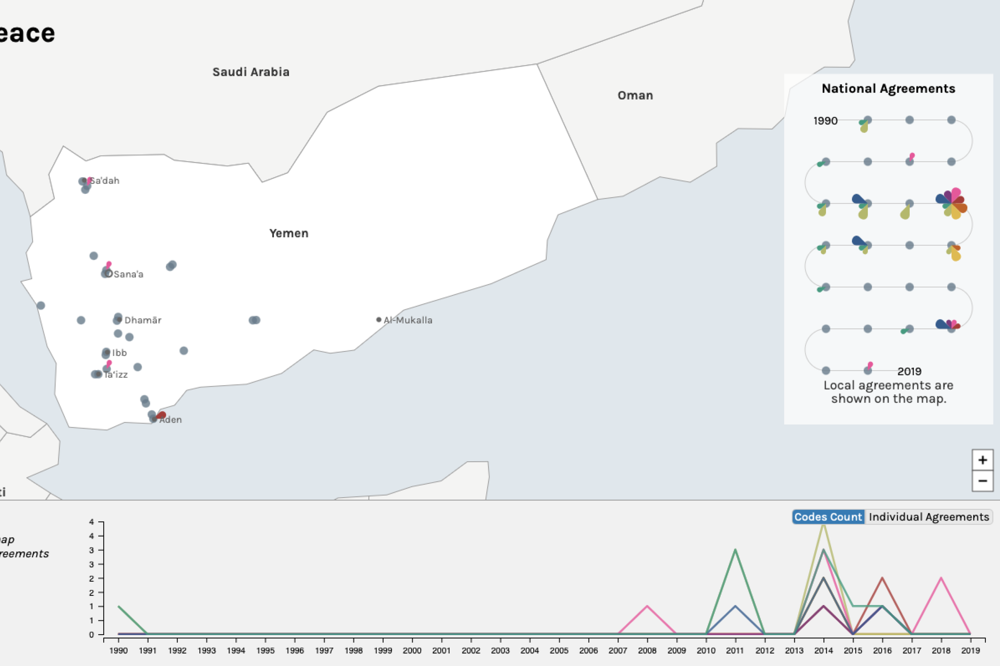 | Yemen Map vis_yemen_map
| Deprecated | | | - Sarah Schöttler
- Lucy Havens
- Mengting Bao
| D3.js | | Dashboard | - Map (view, types: map) — Map of Yemen agreements by location (js/yemenmap.js, js/setup.js), geocoded via LocalLat/LocalLon.
- Timeline (view, types: timeline) — Timeline of agreements (js/timeline.js) — same map+timeline template pattern as peacerep/pax-map.
| — | — | 2026-07-24 | 2026-07-24 | — |
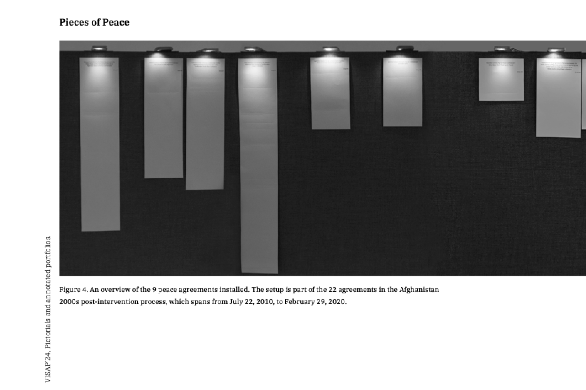 | Pieces of Peace: Women and Gender in Peace Processes vis_pieces_of_peace
| Experimental | - PA-X
- PA-X Gender — Confirmed by the linked blog post's title: 'Representing PA-X Gender through Data Physicalisation'.
| | - Jenny Long
- Jinrui Wang
- Tomas Vancisin
- Laura Wise
- Niamh Henry
- Serena Fiorini
| — | | Data physicalisation | - Physical Data Piece (view, types: —) — Physical, non-digital artefact representing PA-X Gender data (per peacerep.org/2024/11/22/artistic-perspective-representing-pa-x-gender-through-data-physicalisation/); no chart-level type applies since it's not software-rendered.
| — | — | 2026-07-24 | 2026-07-24 | Constructed with physical materials (data physicalisation), not a software tool — no `tools` entries apply. Includes two illustrations by Serena Fiorini, made from hand drawings (per direct user confirmation, 2026-07-29; not documented on any public page). |
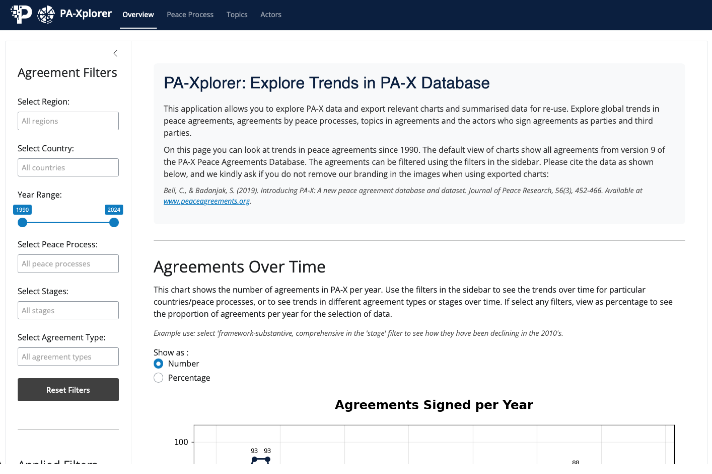 | PA-X Chart Explorer vis_pax_chart_explorer
| Experimental | - PA-X
- PAA-X — Confirmed via server/actors.py and server/peace_process.py (actor scatter map + actor co-occurrence UpSet plot).
| — | | Shiny | | Dashboard | - Home Bar Charts (view, types: bar_chart) — Stage-comparison bar charts on the Home tab (server/home.py, matplotlib ax.bar).
- Actors Geo-Scatter (view, types: map, bar_chart) — Geographic scatter map of actors (server/actors.py, plotly px.scatter_geo) plus stage bar charts.
- Actor Co-occurrence UpSet (view, types: upset_plot) — UpSet plot of actor co-occurrence across agreements (server/peace_process.py, python upsetplot.UpSet).
- Topics Geo-Scatter (view, types: map, scatterplot, bar_chart) — Geographic scatter map (plotly px.scatter_geo) and matplotlib scatter/bar charts by topic (server/topics.py).
- Sidebar Filters (component, types: —) — Shared sidebar filter controls across tabs (components/sidebar.py, filters.py).
| — | — | 2026-07-24 | 2026-07-24 | — |
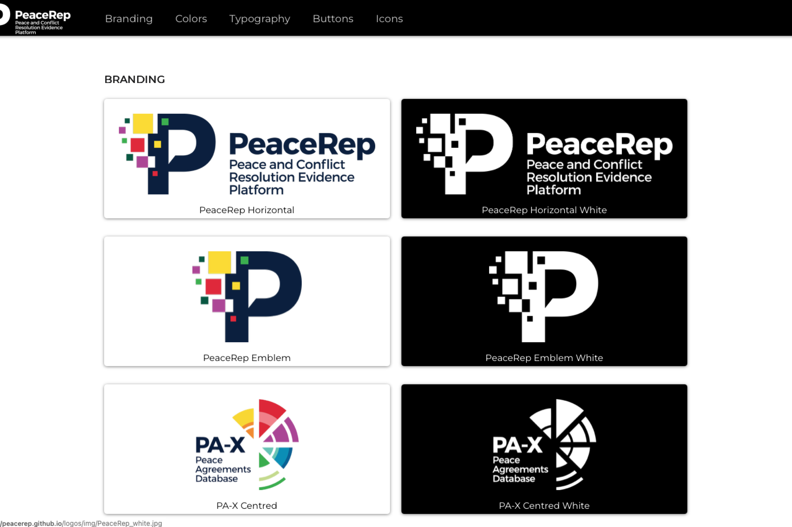 | PeaceRep Style Guide vis_peacerep_style_guide
| Excluded | — | — | | — | | — | — | — | — | 2026-07-24 | 2026-07-24 | — |
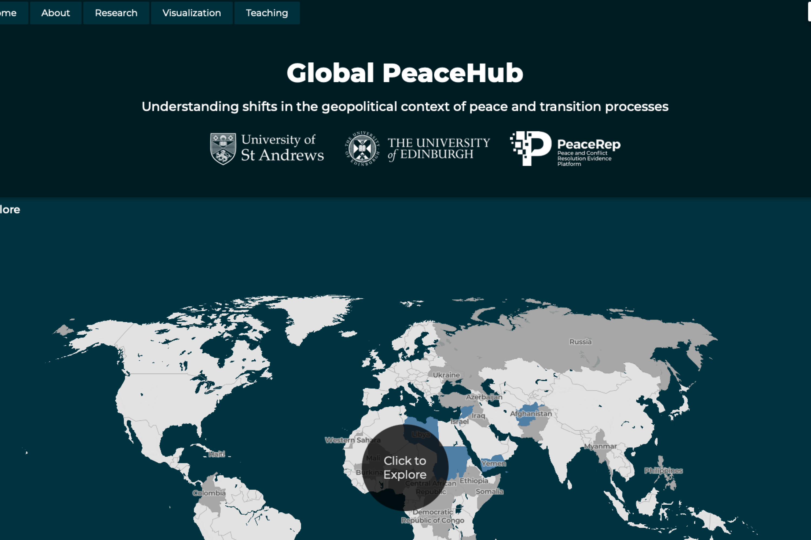 | MEND vis_mend
| Experimental | - MEND — Confirmed via tvancisin/mend repo: public/data/mend_april.csv (event-level mediation data) plus mend_all_actors.csv (actor lookup table, itself keyed by GLOPAD_ID).
- UCDP — Confirmed via tvancisin/mend repo: public/data/ucdp_last_last.csv (country/month/best fatality estimate).
| — | - Tomas Vancisin
- Mateja Peter
| Svelte, Vite, D3.js, Mapbox GL JS, Turf.js | | Dashboard | - Mediator Network (view, types: network) — Force-directed network of mediators/actors (src/routes/SubPage.svelte force-simulation params: manyBodyStrength, nodeStrokeWidth).
- Map (view, types: map) — Map of mediation events/actors (src/routes/Map.svelte).
- Heatmap (view, types: heatmap) — Heatmap, likely of mediation activity by year/actor (src/routes/Heatmap.svelte).
| — | — | 2026-07-24 | 2026-07-24 | SubPage.svelte assembles a per-country report from 9 numbered sub-sections (First.svelte..Nine.svelte) beyond the 3 views logged here; not individually itemized given diminishing returns at this point in the pass — worth a closer look in a future session if per-section detail matters. |
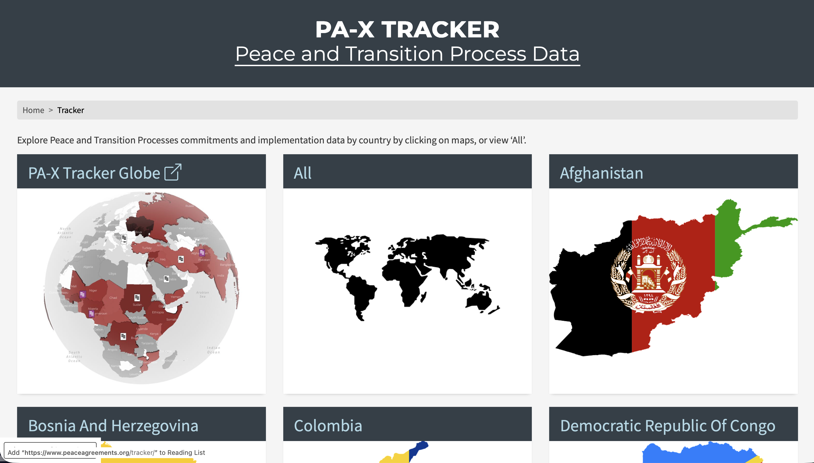 | PA-X Tracker vis_pax_tracker
| Experimental | | - Activity (covered)
- Time (covered)
| | University of Edinburgh Information Services | | Map | - Country Navigation Map (view, types: map) — Clickable world map for navigating to a country's tracker sub-pages ('Explore... by clicking on maps, or view All', per the page's own text).
- Country Search (component, types: —) — Text search/filter over the country dropdown (#inputSearchCountries).
| — | — | 2026-07-24 | 2026-07-24 | This record is the PA-X Tracker's landing/navigation page (peaceagreements.org/tracker/), which links out to the per-topic tracker tools already logged as their own records (Process Overview Dashboard, Peace Impacts Dashboard(s), Timelines of Institutional Change, Map Visualising Peace Agreements in Time and Space, Live Process Global Map) — kept minimal here rather than duplicating their content. |
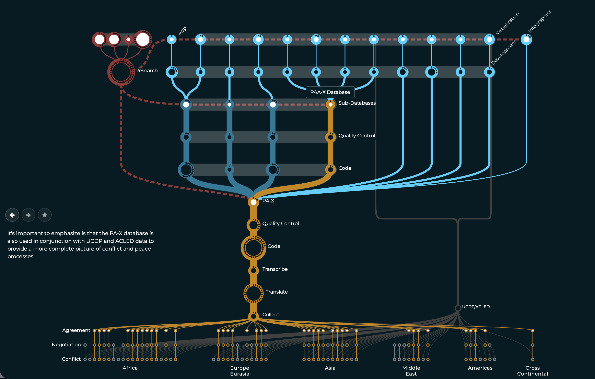 | Provenance of Peacebuilding vis_provenance_of_peacebuilding
| Experimental | - PA-X — This visualisation depicts PA-X's own production pipeline/methodology (collection, translation, transcription, QC, database, research use) as tree nodes — it's about PA-X, not built from PA-X's content fields, so field_ids don't apply.
| - Activity (covered)
- Actor (covered)
- Relational data (covered)
| - Tomas Vancisin
- Niamh Henry
- Uta Hinrichs
- Jinrui Wang
- Benjamin Bach
| Svelte, Vite, D3.js | | Provenance tree | - Provenance Tree (view, types: provenance_tree) — Bidirectional upstream/downstream tree (src/lib/ForegroundTree.svelte, BackgroundTree.svelte) showing how PA-X data itself is produced (nodes include pax_collect, pax_translate, pax_transcribe, pax_quality_control, pax_db, research) — visualises the data pipeline/methodology, not PA-X's content fields.
- Legend (component, types: —) — Legend(s) for node/people types (src/lib/Legend.svelte, PeopleLegend.svelte, TreeLegend.svelte).
| — | — | 2026-07-24 | 2026-07-24 | — |
 | South Sudan Peace Perceptions Map vis_ssd_survey_map
| Experimental | | | - Tomas Vancisin
- Niamh Henry
- Jan Pospisil
| Svelte, Vite, D3.js | | Map | — | — | — | — | — | — |